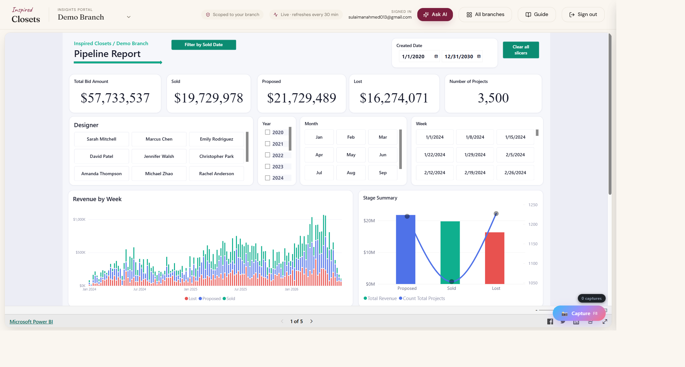

"How are we doing this month?"
It's a Monday in May. Sarah Watson opens her laptop on the kitchen counter while the coffee finishes brewing. She runs Inspired Closets Austin — twelve designers, eighty active projects, leads coming in from Google, Houzz, Instagram, the showroom, and a small army of word-of-mouth referrals.
She has Power BI. She has seven report pages. Each page has roughly twelve charts. Each chart has filters, tooltips, drill-throughs. Every number she could ever want is in there, somewhere.
All she wants to know this morning is one thing: are we on track?
So she opens the Pipeline page, finds the YTD revenue card, mentally compares it to where she thinks they were last month, switches to the Designer Performance page to see who's leading, gets distracted by a flat KPI on Lead Conversion, follows that to the Lead Source page, forgets what she was originally comparing, and four minutes later she's lost in a thicket of slicers.

"I don't need a report. I need someone who can read the report for me."
That sentence — said with a sigh, into a half-empty coffee mug — was the entire product brief.